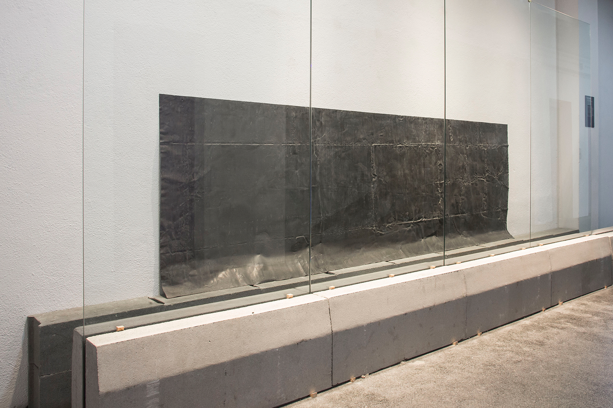
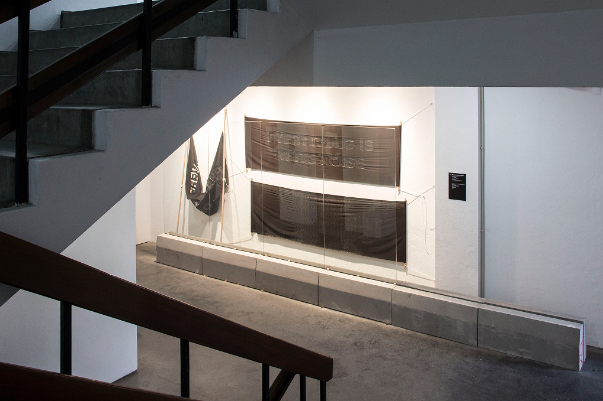
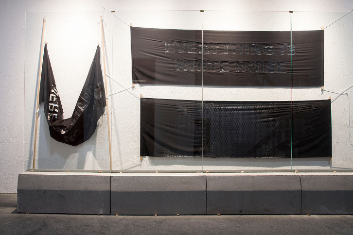
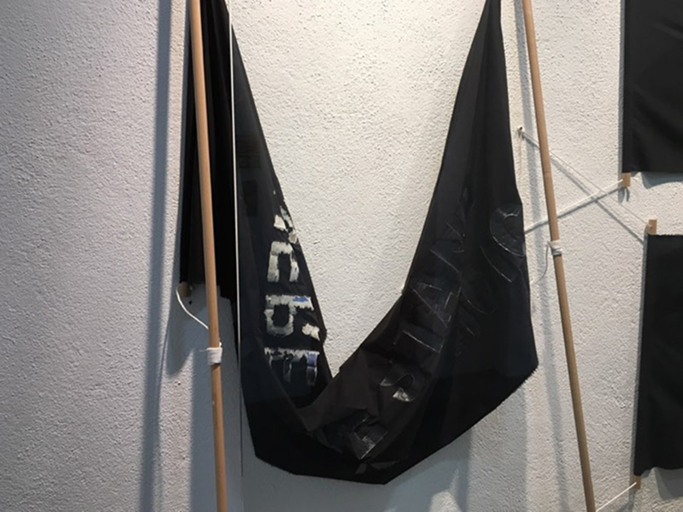
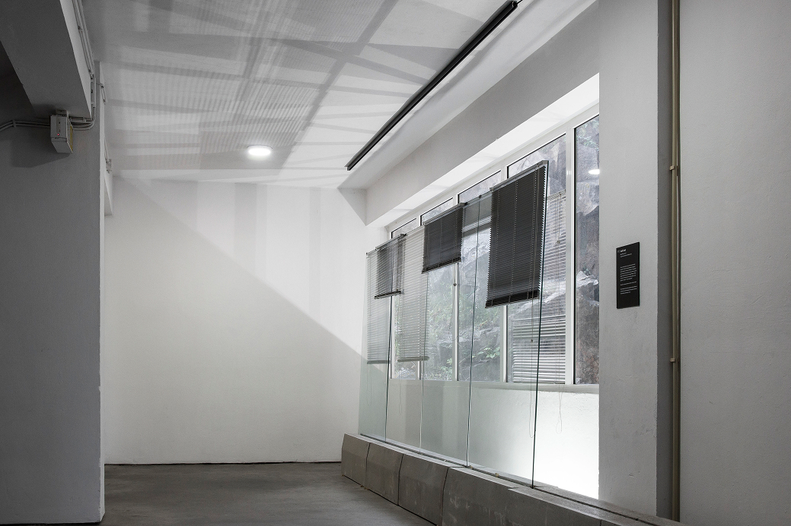
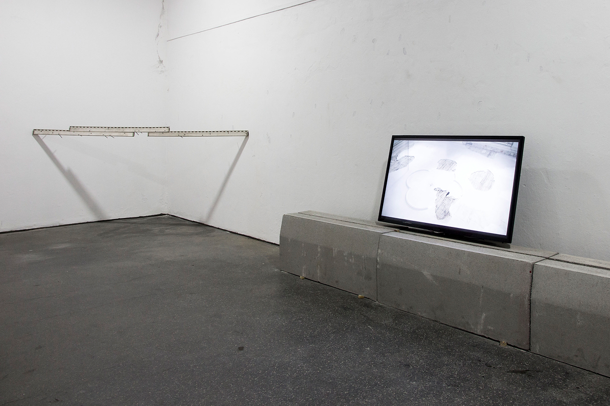
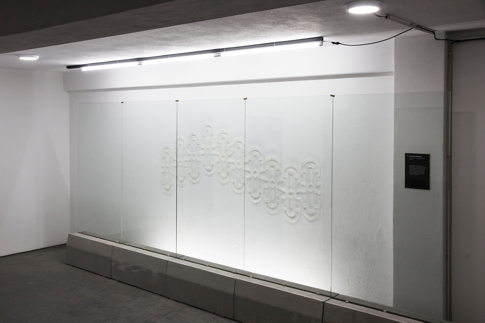
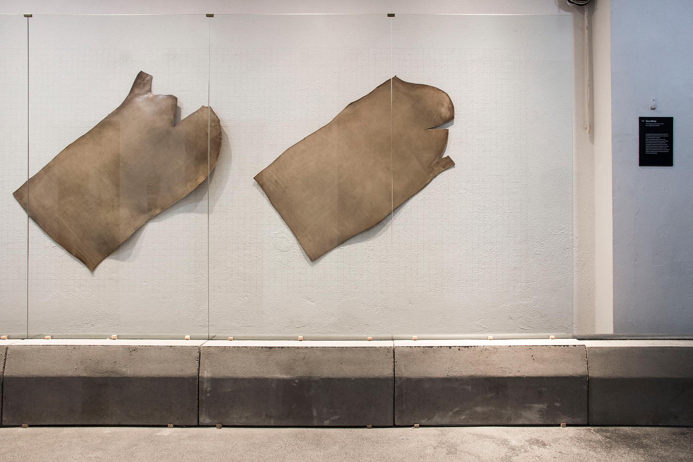
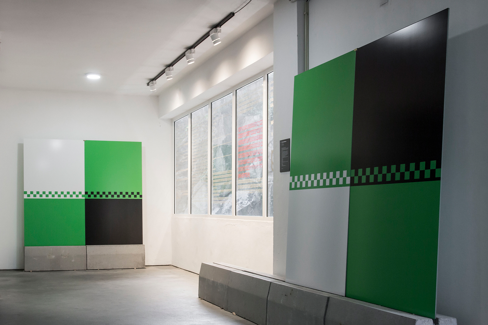

“exposição / composição, Variação nº2” reflects an intrinsic question to the conceptual organization and production of an artistic object, the understanding of the composition – its regimes and dogmas -, inherent and obvious in the work of art regardless of the media that the artist selected for the materialization of its concept. The pictorial image, the text, the music, the performance, based on rhythm and order, based on the order of the composition. Considering Arnheim’s thesis, which was essential for the composition study in the 20th century, this exhibition identifies some of its indicators:
––– balance, shape, structure, evolution, space, light, colour, movement, dynamics, and expression.
Considering the selected exhibited works and the authors, the dichotomy between its fragility and austerity is reflected, which is representative of the consideration of the shape. Like the exhibition title proclaims, different exercises of variation and composition that represent this dichotomy are exhibited. In the production of a work of art, there is a combination of factors: sorting out shapes, elements and figures that are articulated according to a code, according to some sort of order, rhythm, and logic. Any relation between shapes is adapted to the purpose of the artist’s essay, without neglecting any gesture or attitude, as well as any thought, action, or intention. The syntax game in the composition acquires significance that are extended and partly come from their interpretation/formal composition in the apprehension of a work of art.
What is observable and identifiable in the selection of the exhibited artworks are the different proposals of composition practices, but also some deviations to the main theme of the exhibit that lives from a collective concept, that originate from this dichotomy, the soberness. It is certain that the composition is inherent to any artistic object. Therefore, some of the pieces are detached from the concern about the shape, trying to reflect in the inherence of the transposition of its composition. With a hard and severe lexicon of the geometric matrix that makes up syntax of new significances and provokes questions of the social domain, of the disappearance of the consequence of the image, to the order of action.
The exhibit is not founded by studies about the shape and composition expressed in artistic movements. It explores the conscience and the notion of shape in a period in which it becomes even more automatic due to all the available apps that allow us to interpret in an “easier” way.








Galeria Vertical Silo Auto, Porto
31.4 — 16.6.2017
Porto Lazer – Cláudia Melo
Luís Pinto Nunes,
Luís Albuquerque Pinho
Studio Dobra
Paula Pinho
Pedro Silva
Andreia Santana,
Cristina Mateus,
Fernando José Pereira,
Luís Luz,
Maria Trabulo,
Mauro Cerqueira,
Vera Mota